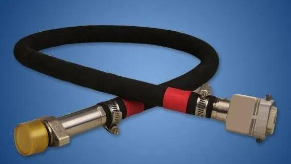
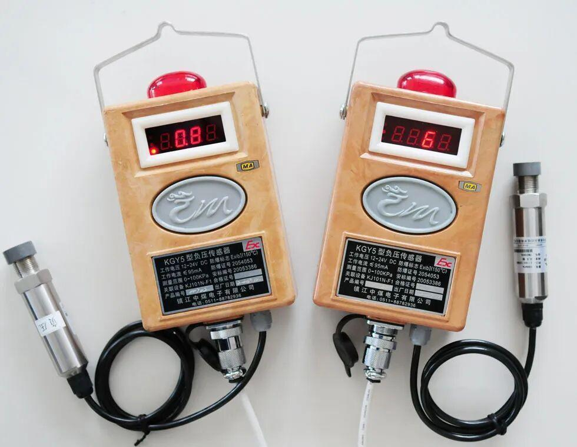
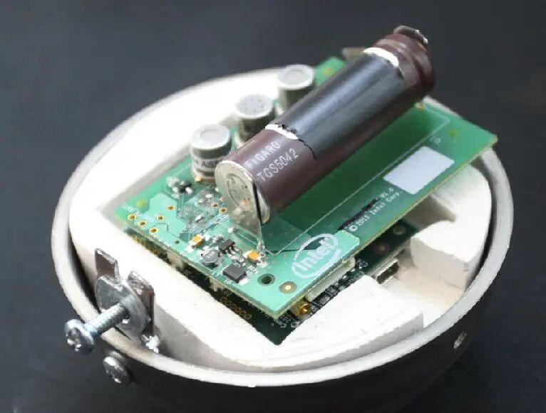
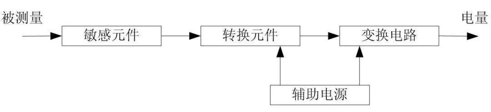
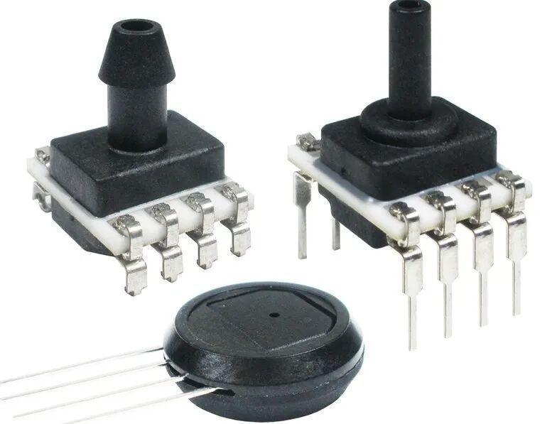
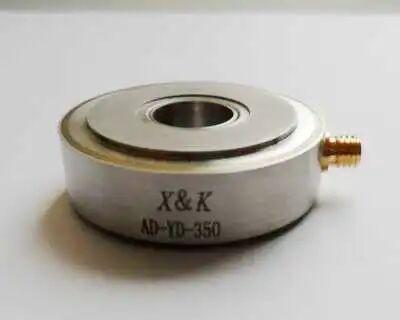
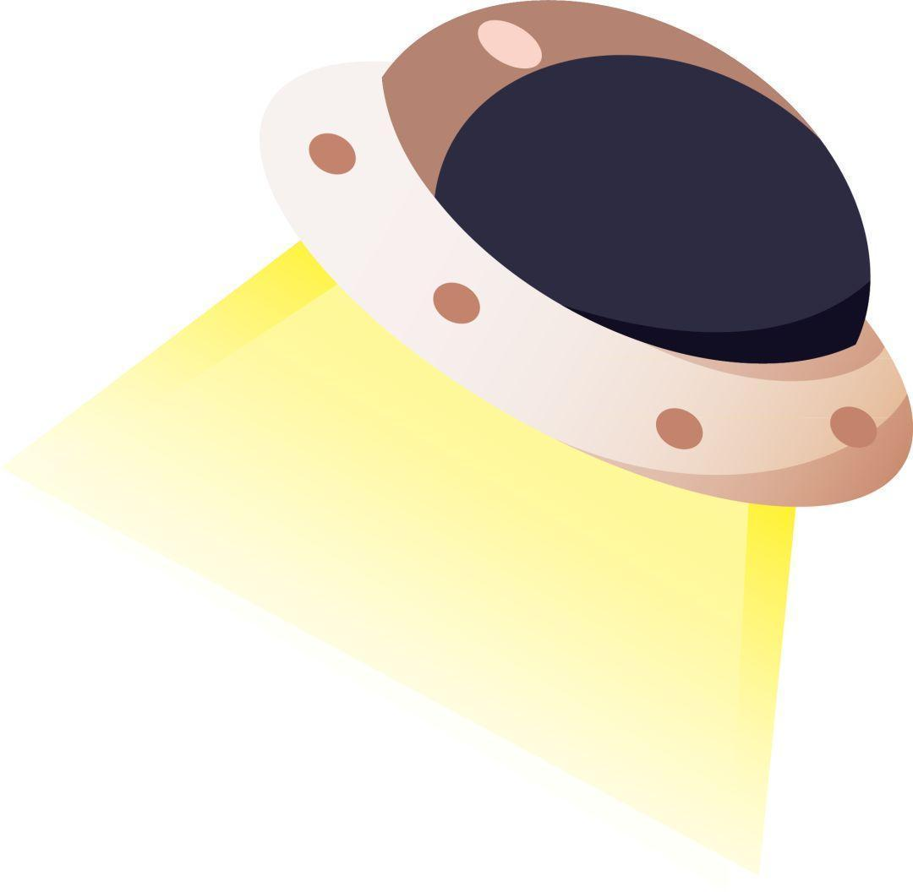

机器人的神经——传感器

目前，有些先进的机器人和人类一样，有感官和知觉，比如你推倒它，它会自己爬起来；你打它一下，它会把头转向你；它看到了障碍，会自己绕开……这种自动化或半自动化的机器人不需要人工操作，就可以自己完成这些动作。

人类通过各种感官系统来认识世界
比如触觉、嗅觉和味觉等，
那机器人是通过什么来感知世界呢？
机器人也是通过感知系统来感知世界
这个感知系统是通过各种各样的传感器组成的。
那么，传感器又是什么呢？
今天，小编就来带大家来一探究竟。

传感器（英文名称：transducer/sensor）是一种检测装置，能感受到被测量的信息，并能将感受到的信息，按一定规律变换成为电信号或其他所需形式的信息输出，以满足信息的传输、处理、存储、显示、记录和控制等要求。




人们为了从外界获取信息，必须借助于感觉器官。而单靠人们自身的感觉器官，在研究自然现象和规律以及生产活动中它们的功能就远远不够了。为适应这种情况，就需要传感器。因此可以说，传感器是人类五官的延长，又称之为电五官。
新技术革命的到来，世界开始进入信息时代。在利用信息的过程中，首先要解决的就是要获取准确可靠的信息，而传感器是获取自然和生产领域中信息的主要途径与手段。
传感器早已渗透到诸如工业生产、宇宙开发、海洋探测、环境保护、资源调查、医学诊断、生物工程、甚至文物保护等等极其之泛的领域。可以毫不夸张地说，从茫茫的太空，到浩瀚的海洋，以至各种复杂的工程系统，几乎每一个现代化项目，都离不开各种各样的传感器。由此可见，传感器技术在发展经济、推动社会进步方面的重要作用，是十分明显的。世界各国都十分重视这一领域的发展。相信不久的将来，传感器技术将会出现一个飞跃，达到与其重要地位相称的新水平。




传感器一般由敏感元件、转换元件、变换电路和辅助电源四部分组成，如图所示

敏感元件直接感受被测量，并输出与被测量有确定关系的物理量信号；转换元件将敏感元件输出的物理量信号转换为电信号；变换电路负责对转换元件输出的电信号进行放大调制；转换元件和变换电路一般还需要辅助电源供电。




传感器的作用非常多，他们可以作用于非常多的领域。小编在这里给大家列举几个：
1、超声波距离传感器
超声波测距离传感器采用超声波回波测距原理，运用精确的时差测量技术，检测传感器与目标物之间的距离，采用小角度，小盲区超声波传感器，具有测量准确，无接触，防水，防腐蚀，低成本等优点，可应于液位，物位检测，特有的液位，料位检测方式，可保证在液面有泡沫或大的晃动，不易检测到回波的情况下有稳定的输出，应用行业：液位，物位，料位检测，工业过程控制等。
2、电阻式传感器
电阻式传感器是将被测量，如位移、形变、力、加速度、湿度、温度等这些物理量转换式成电阻值这样的一种器件。主要有电阻应变式、压阻式、热电阻、热敏、气敏、湿敏等电阻式传感器件。
3、热电阻传感器
热电阻传感器主要是利用电阻值随温度变化而变化这一特性来测量温度及与温度有关的参数。在温度检测精度要求比较高的场合，这种传感器比较适用。较为广泛的热电阻材料为铂、铜、镍等，它们具有电阻温度系数大、线性好、性能稳定、使用温度范围宽、加工容易等特点。用于测量-200℃～+500℃范围内的温度。
······



本周科普就到这里啦~
我们下周再见！

排版|辛学敏
资料|网络
图片|网络
关注我们，了解更多资讯~